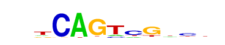

| p-value: | 1e-582 |
| log p-value: | -1.341e+03 |
| Information Content per bp: | 1.688 |
| Number of Target Sequences with motif | 1032.0 |
| Percentage of Target Sequences with motif | 6.76% |
| Number of Background Sequences with motif | 263.7 |
| Percentage of Background Sequences with motif | 0.79% |
| Average Position of motif in Targets | 38.6 +/- 17.1bp |
| Average Position of motif in Background | 49.8 +/- 34.6bp |
| Strand Bias (log2 ratio + to - strand density) | -0.3 |
| Multiplicity (# of sites on avg that occur together) | 1.02 |
| Motif File: | file (matrix) reverse opposite |
| Rank | Match Score | Redundant Motif | P-value | log P-value | % of Targets | % of Background | Motif file |
| 1 | 0.970 | 1e-579 | -1335.427706 | 7.74% | 1.10% | motif file (matrix) | |
| 2 | 0.930 | 1e-421 | -969.856257 | 7.04% | 1.30% | motif file (matrix) | |
| 3 | 0.752 | 1e-367 | -846.038521 | 29.65% | 16.30% | motif file (matrix) | |
| 4 | 0.894 | 1e-362 | -834.941898 | 5.24% | 0.81% | motif file (matrix) | |
| 5 | 0.896 | 1e-362 | -833.907175 | 8.70% | 2.28% | motif file (matrix) | |
| 6 | 0.867 | 1e-326 | -751.012154 | 13.53% | 5.26% | motif file (matrix) | |
| 7 | 0.689 |  | 1e-317 | -729.953837 | 31.62% | 18.72% | motif file (matrix) |